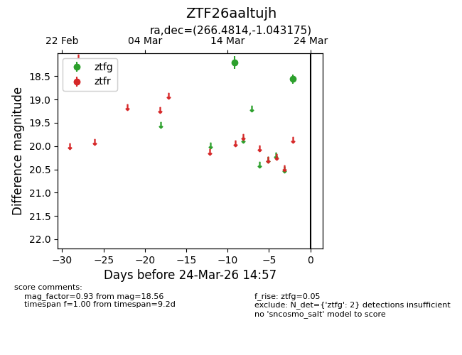
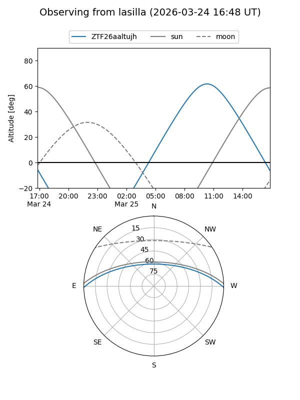
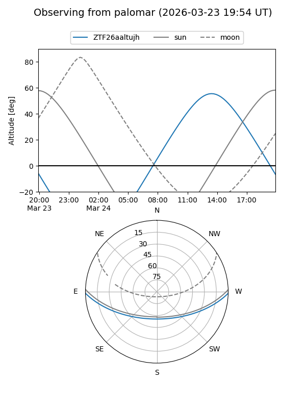

ZTF26aaltujh
Target ZTF26aaltujh at 2026-03-24 15:00
Aliases and brokers:
FINK: link
Lasair: link
ALeRCE: link
alt names
ZTF26aaltujh (ztf,fink_ztf)
Coordinates:
equatorial (ra, dec) = 266.4814,-1.04318
equatorial (HMS+DMS) = 17:45:55.54,-01:02:35.43
galactic (l, b) = (24.3505,+14.04065)
Flags:
Photometry:
last ztfg=18.56
2 ztfg detections
Lightcurve

Visibility


Additional plots